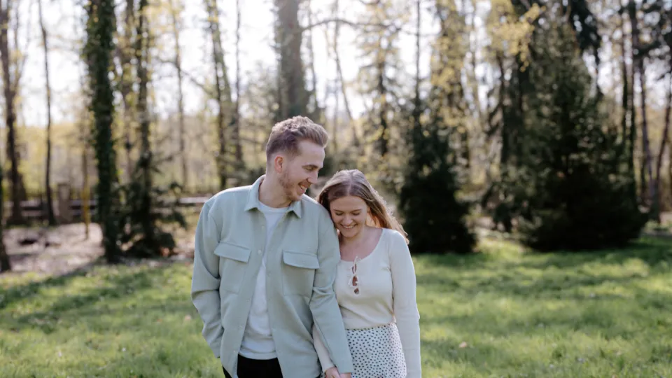

11. 07. 2026
Byl to skvělej den. Tady jsou všechny vzpomínky, co z něj zůstaly.
Prohlédnout →Jak to celé vypadalo
Fotky
Kompletní galerie z celého svatebního dne, tak jak ji nafotil náš fotograf.
Otevřít galerii →Máte v mobilu fotky nebo videa ze svatby? Nahrajte je do našeho společného alba – uvidí je všichni ostatní.
Nahrát fotky →